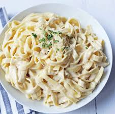

Fettucini Alfredo

Description
Fettuccine Alfredo is a classic Italian pasta dish made with thick, flat fettuccine noodles tossed in a rich and creamy sauce.
The sauce is traditionally prepared using just a few simple ingredients
Ingredients
- Butter
- Heavy cream
- Parmesan cheese
- Garlic
Steps
- Turn on the fire
- Bowl the pasta
- In a seprate pan , put the garlic and mil and cream and cooked them
- Wait 15 minute, and dry the pasta with keep little bit of water that she was cooked with
- add the pasta to sauce pan
- VOila Bon Appetit